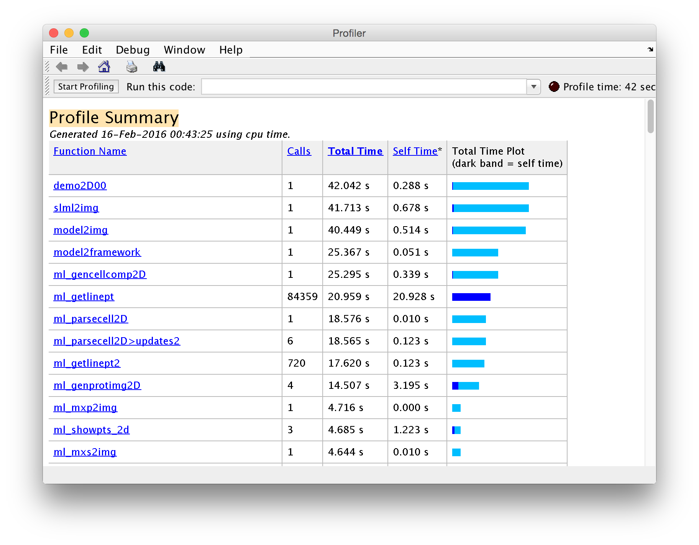

GraphViz-like tools for Matlab
Pretty nice tools for viz
You can use Matlab’s profile function to get some useful information about your scripts.
For example, running the profiler around CellOrganizer’s demo2D00
>> profile on;
>> demo2D00();
>> profile off;
>> profview
will produce a report similar to this one

Report from running a profile on demo2D00.
But sometimes you want something visual. And…. here comes GraphViz-like tools for MATLAB to the rescue!
GraphViz-like tools for Matlab “[…] creates a GraphViz dot language representation of the dependencies of a function.”
Using this tool is very straightforward, all you need to do is download the toolkit along with its dependencies; fdep: a pedestrian function dependencies finder and GraphViz.
Installation
Before we start you need
I tested the toolkit in Matlab 2014b for Mac. This shell script will download the toolkit and its two dependencies. Assuming you are using HomeBrew, it is will also install GraphViz
wget -nc http://www.mathworks.com/matlabcentral/mlc-downloads/downloads/submissions/27608/versions/2/download/zip/docsgen_dot_tools.zip
unzip -o docsgen_dot_tools.zip
rm -f docsgen_dot_tools.zip
wget -nc http://www.mathworks.com/matlabcentral/mlc-downloads/downloads/submissions/24652/versions/4/download/zip/drawDot.zip
unzip -o drawDot.zip
rm -f drawDot.zip
wget -nc http://www.mathworks.com/matlabcentral/mlc-downloads/downloads/submissions/17291/versions/8/download/zip/fdep_21jun2010.zip
unzip -o fdep_21jun2010.zip
rm -f fdep_21jun2010.zip
brew install graphviz
If the above commands were successful, then you should see the following files as well as the dot binary.
$ ls
drawDot.m hfdep mGraphViz.m script.sh tfdep2.m tfdep4.m
fdep.m license.txt mkdotfile.m tfdep1.m tfdep3.m
$ which dot
/usr/local/bin/dot
Example
This example makes the graph from a file in my desktop. Make sure the file save in the variable ifile exists before running.
echo "
ifile = '~/Desktop/script.m';
if exist( ifile )
ofile = 'graph.dot';
txt = mkdotfile( ifile, ofile );
system( [dot -Tjpg graph.dot -o graph.jpg] );
exit;" > make_graph.m
end
matlab -nodesktop -nosplash -r "make_dot_graph;"
The result from running the script above is the graph below

Result from running GraphViz-like tools for MATLAB on CellOrganizer’s demo2D00.